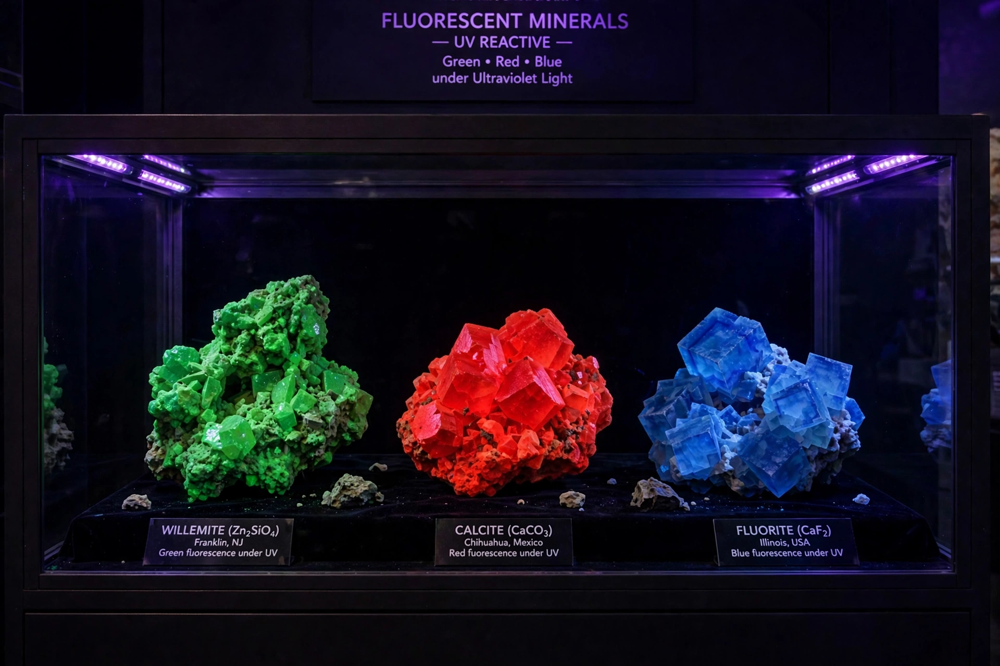

| Luminescence | |
|---|---|
 | |
| Definition | Emission of light not caused by heat |
| Term coined | Eilhard Wiedemann, 1888 |
| Types | Fluorescence; phosphorescence; chemiluminescence; bioluminescence; electroluminescence; triboluminescence |
Luminescence is the emission of light by a substance that has not been heated, as opposed to incandescence, which is light emitted by a substance as a result of heating. Luminescence can be caused by chemical reactions, electrical energy, subatomic motions or stress on a crystal. The term was introduced by the German physicist Eilhard Wiedemann in 1888, from the Latin lumen, light.
In most luminescent systems an external energy source raises electrons in atoms or molecules from their ground state to an excited state. When the electrons return to lower energy levels, the energy difference is emitted as photons, often in the visible spectrum. The colour depends on the size of the energy step; the duration of emission after excitation stops distinguishes fluorescence (nanoseconds) from phosphorescence, which can persist for seconds, minutes or longer because the return transition is quantum-mechanically "forbidden".
Luminescence underlies fluorescent lamps and phosphor coatings, LED lighting, forensic detection of fingerprints and body fluids, medical imaging, safety signage, and scientific techniques such as fluorescence microscopy, recognised by the 2008 Nobel Prize in Chemistry for the green fluorescent protein.